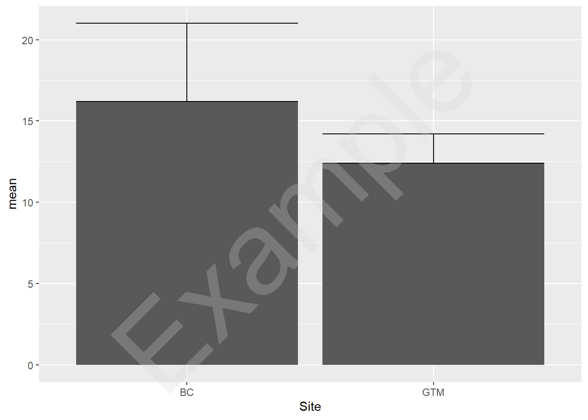

library(ggplot2)Introductory Lab Guide
Getting started
When starting a new analysis in R, it is best to create a new R script. You can save this script in your course folder. At the start of each script, it is good form to load any needed packages. In this exercise we’ll need ggplot. If you haven’t already installed ggplot2, enter into the console install.packages("ggplot2").
At the top of your script, load the package:
Accessing the data
First you should download the data from the link in the assignment. The link should take you to this page. You can also download directly from that page and put it into your course folder.
Reading the data into R.
If you downloaded the data to your folder, you can read it in with read.csv(). First make sure your working directory is focused on your file.
setwd('~/BIOL570L_Docs') # set this to your path in your computer's folder
crab_width <- read.csv('LTER_CrabCarapaces.csv')Explore the data
We can open up a new window too view the data
View(crab_width) # this will open up a new tab to see all dataWe can also take a peak at the first few rows:
head(crab_width) # View just the top 10 rows Site Replicate carapace_width
1 GTM 1 12.43
2 GTM 2 14.18
3 GTM 3 14.52
4 GTM 4 12.94
5 GTM 5 12.45
6 GTM 6 12.99Or we can view the structure of the data frame:
str(crab_width) # view the structure of the data frame'data.frame': 392 obs. of 3 variables:
$ Site : chr "GTM" "GTM" "GTM" "GTM" ...
$ Replicate : int 1 2 3 4 5 6 7 8 9 11 ...
$ carapace_width: num 12.4 14.2 14.5 12.9 12.4 ...Summarizing the data
We want to summarize the data based on two sites. In this example, I’m selecting the BC and GTM sites. To summarize the data there are many different approaches. Here I’ll show one approach that is possible using baseR. This is by far not the best approach, even when using baseR. However, it will show you a little more functionality rather than a ‘black-box’ approach. The alternative option is to use the dplyr package from the tidyverse. This is probably the most common approach for this type of application and most likely what I would do if I needed to in my normal work.
You only need to use one of these options
Base R Option:
First, I’ll create individual variables for each mean value and sd value by site:
mean_BC <- mean(crab_width$carapace_width[which(crab_width$Site == 'BC')]) # take mean of BC
sd_BC <- sd(crab_width$carapace_width[which(crab_width$Site == 'BC')]) # take sd of BC
# same for GTM
mean_GTM <- mean(crab_width$carapace_width[which(crab_width$Site == 'GTM')])
sd_GTM <- sd(crab_width$carapace_width[which(crab_width$Site == 'GTM')])We can look at those values individually:
print(mean_GTM)[1] 12.40321Then we’ll need to pull all those values into a data frame
crab_means <- data.frame(Site = c('BC','GTM'),
mean = c(mean_BC, mean_GTM),
sd = c(sd_BC, sd_GTM))We now can take a look at those values
crab_means Site mean sd
1 BC 16.19730 4.814464
2 GTM 12.40321 1.804449dplyr option:
This is the cleaner approach but it does abstract a few steps away. First you want to make sure you have installed dplyr. Also you should load the library (do this at the top of the script).
library(dplyr)The tidyverse syntax is really big on piping code together. So we’ll use a number of functions here and chain them all together. Piping takes the value on the left of the pipe operator (|>) and pushes it to the first argument of the function on the right. In tidyverse/dplyr functions, the first argument is often a data.frame. This makes it easy to chain together these functions. In this code, I will chain it all together, but if you want to learn more, you can run one pipe at a time and see what happens in each step.
crab_means <- crab_width |>
filter(Site %in% c('BC', 'GTM')) |> #filter only to these sites
group_by(Site) |> #group by site
summarize(mean = mean(carapace_width),
sd = sd(carapace_width)) # apply mean and sd functionsNow we can look at the data. Note that tidyverse functions will create tibbles rather than data.frames. For most purposes this is a very minor detail that will not matter until you are working on high-level problems or developing software in R.
crab_means# A tibble: 2 × 3
Site mean sd
<chr> <dbl> <dbl>
1 BC 16.2 4.81
2 GTM 12.4 1.80Plotting the data
Now that we have our summary data, we can plot it. Here I am using ggplot2 to plot. While you can make great graphics using baseR, it is much easier to use ggplot once you get the hang of it.
Remember, make sure that ggplot2 is loaded at the top of your script.
Here, I’ll work through the steps of making a plot.
A basic plot
First the very bare bones will have just bars, and error bars. In ggplot, you first need to call the ggplot() function. We can supply the data here and it will work well with all subsequent functions. ggplot functions can be layered on using +. It is good practice to break lines between layers.
Each layer will add a new element to the plot.
ggplot(data = crab_means) +
geom_bar(aes(x = Site, y = mean), stat = 'identity') +
geom_errorbar(aes(x = Site, ymin = mean, ymax = mean + sd))
Making the plot pretty
Let’s add labels and clean it up. ggplot is great because we can use built-in themes to make the plots nice
ggplot(data = crab_means) +
geom_bar(aes(x = Site, y = mean), stat = 'identity') +
geom_errorbar(aes(x = Site, ymin = mean, ymax = mean + sd)) +
labs(x = 'Site', y = 'Mean Carapace Width [mm]')+
theme_classic()We can also add color to the plot to make it a little nicer. Here I’m coloring by site.
ggplot(data = crab_means) +
geom_bar(aes(x = Site, y = mean, fill = Site), stat = 'identity') +
geom_errorbar(aes(x = Site, ymin = mean, ymax = mean + sd, color = Site),
width = 0.5) +
labs(x = 'Site', y = 'Mean Carapace Width [mm]')+
theme_classic()Finally, to make the plot really nice some final touches. First, it will look more professional in cleaner colors. Next we can bolden the axes titles. Also we don’t really need a legend in this case so I removed it.
ggplot(data = crab_means) +
geom_bar(aes(x = Site, y = mean, fill = Site), stat = 'identity') +
geom_errorbar(aes(x = Site, ymin = mean, ymax = mean + sd, color = Site),
width = 0.5) +
scale_y_continuous(expand = c(0,0))+
scale_fill_manual(values = c('black', 'grey'))+
scale_color_manual(values = c('black', 'grey'))+
labs(x = 'Site', y = 'Mean Carapace Width [mm]')+
theme_classic() +
theme(legend.position = 'none', axis.title = element_text(face = 'bold'))